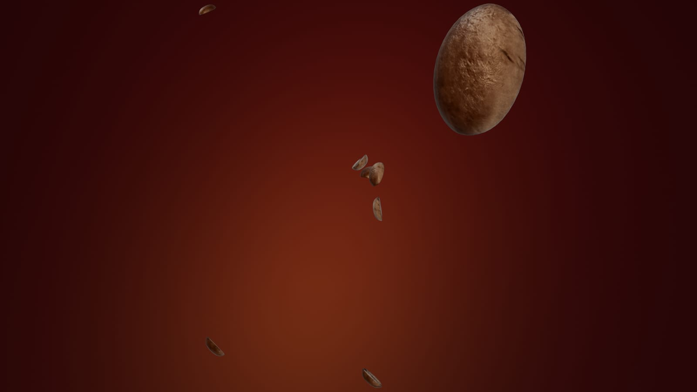
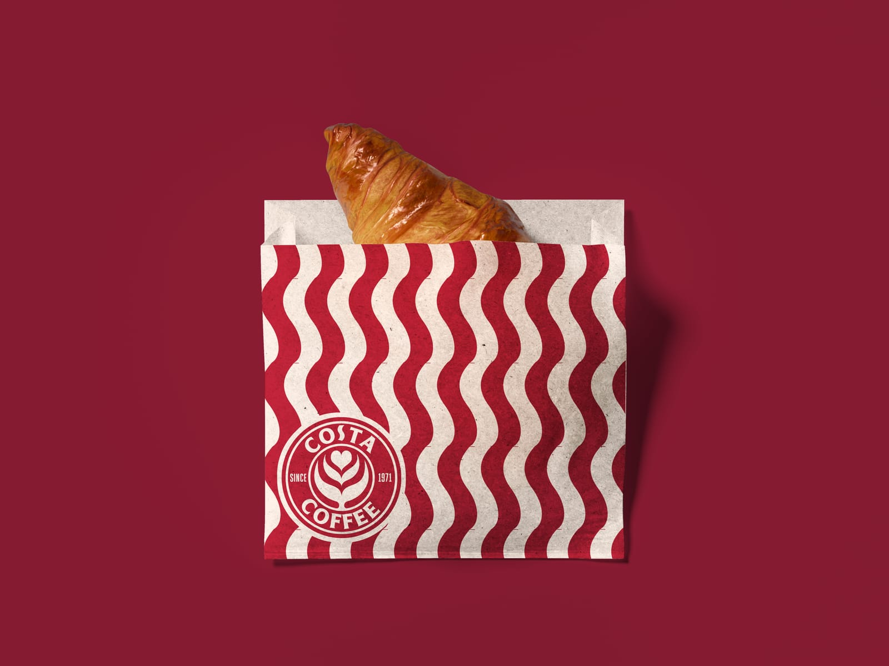

COSTA COFFEE REBRAND
University partnership brief — speculative rebrand. Not affiliated with, endorsed by, or produced for Costa Limited or The Coca-Cola Company.
A partnership brief requiring the rebrand of a recognised high-street brand. Costa Coffee was selected as the subject, with the objective of pulling the brand back to its original identity as a warm, welcoming coffee shop specialising in artisanal coffee.
The research phase covered Costa's history, founding principles, and competitive landscape across the UK coffee market. The strategic direction focused on reconnecting the brand to its craft coffee roots — stripping away the corporate visual language that had accumulated over decades and replacing it with an identity system grounded in the artisanal positioning the company was originally built on.
The rebrand delivered a revised mark, updated colour palette, and full packaging system. All product mockups were rendered in Blender using photorealistic lighting and material setups, demonstrating the new identity across cups, packaging, and environmental applications. The 3D visualisation pipeline allowed rapid iteration on packaging concepts without physical prototyping.
YEAR
2025–2026
TOOLS
Blender, Photoshop, Illustrator, InDesign
ROLE
Sole designer
CONTEXT
University — Partnership Brief
PROCESS

01
RESEARCH
Competitive analysis across the UK coffee market alongside deep research into Costa's founding story and brand evolution. Historical brand positioning was mapped against current market perception to identify the gap between the company's artisanal origins and its current high-street identity. This research phase established the strategic foundation for the rebrand direction.

02
IDENTITY
A revised mark and colour system designed to signal craft and warmth rather than corporate scale. The new identity draws from coffee culture visual language — latte art motifs, warm tonal palettes, and typographic choices that reference independent coffee shops rather than chain retail. Every element was tested against the brand's need to feel approachable and artisanal.

03
3D MOCKUPS
All packaging and product visualisation was executed in Blender with Cycles rendering. Photorealistic cup renders, coffee bean close-ups, and packaging compositions were built to demonstrate the rebrand across physical touchpoints. The 3D pipeline enabled rapid iteration on packaging variants and environmental context shots without physical prototyping.

04
CAMPAIGN
Final deliverables included the full brand identity system, packaging designs across cup sizes, environmental mockups, and a presentation deck articulating the strategic rationale. The campaign materials were designed to demonstrate how the rebrand would function across Costa's existing physical and digital touchpoints.
OUTCOME



This project tested whether a heritage-recovery strategy could work for a brand that had outgrown its origins. The 3D visualisation pipeline proved essential — rendering packaging concepts at photorealistic quality allowed the rebrand to be evaluated as a tangible system rather than a flat identity exercise.